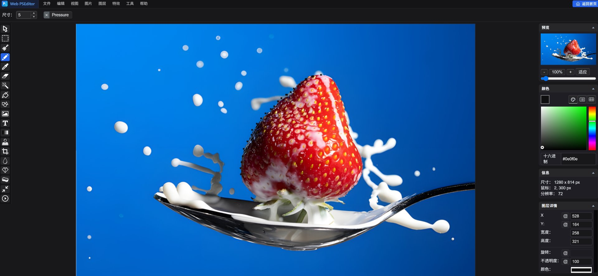

无需安装软件，打开浏览器即用。所有图层混合、魔棒抠图、滤镜调色均在本地 Canvas 极速运算，图片绝不上云。

基于现代 HTML5 Canvas 与 WebAssembly 技术构建的轻量图形引擎
多图层堆叠 · 选区套索 · 导出透明 PNG
色彩曲线 · 局部打码 · 自由排版绘制
零数据上传 · 断网可用 · 隐私绝对保障
循序渐进的实用图文教程，带你掌握在线修图核心技巧
了解 Web PSEditor 的安全性、平台兼容性与使用细节
零安装、零等待、100% 浏览器本地运算。所有图片绝不上云，安全可靠。
Web PSEditor 专为键鼠专业修图与多图层精细操作设计。在手机小屏上操作体验受限，建议收藏网址并在 PC 浏览器中打开。